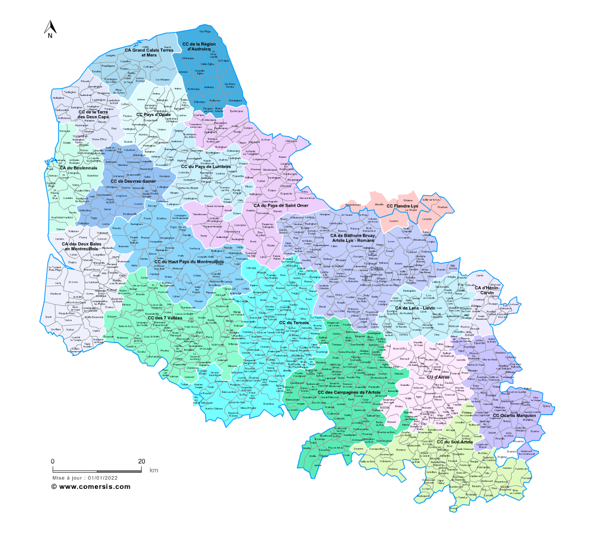

Cordiste 62
Travaux sur Corde
62 Pas-de-Calais
NOS PRESTATIONS

Offrez à vos vitrages un éclat retrouvé grâce à notre prestation de nettoyage en hauteur. L’intervention élimine traces et salissures, y compris sur les surfaces les plus inaccessibles. Nos cordistes garantissent un rendu impeccable, exécuté rapidement et en toute sécurité.
CONTACTEZ - NOUS
RAVALEMENT – Maçonnerie & Peinture
Donnez une seconde vie à vos façades en hauteur sans monter d’échafaudage avec Quali-corde nord. Nos cordistes diplômés prennent en charge vos chantiers de ravalement, maçonnerie et peinture sur des zones d’accès complexe. Des prestations rapides, soignées et fiables, pensées pour les façades urbaines comme pour les chantiers techniques.
CONTACTEZ - NOUS
INDUSTRIE (silos & maintenance)
Réactivité. Fiabilité. Sécurité. Nos équipes interviennent en hauteur et sur les zones difficiles pour assurer l’entretien, la maintenance et l’inspection de vos silos et installations industrielles. Notre savoir-faire en travaux sur corde nous permet de réaliser des opérations rapides et sûres, sans bloquer votre production.
CONTACTEZ - NOUS
SECURITE – Lignes de vie & Filets
Protégez vos installations et vos collaborateurs en hauteur. Nous prenons en charge la fourniture et la pose de lignes de vie, points d’ancrage, filets de sécurité et dispositifs antichute. Des équipements aux normes en vigueur, parfaitement adaptés aux structures neuves comme aux rénovations.
CONTACTEZ - NOUS
URGENCE – Purge, Bâchage & Filets
Réponse immédiate pour mettre vos bâtiments en sécurité. Chutes d’éléments, tempêtes, dégâts : nos cordistes se déplacent sans délai pour purger, bâcher et installer des filets. Grâce à leur réactivité et leur expertise, vos sites sont protégés en un minimum de temps. N’attendez plus pour sécuriser, nous intervenons sans attendre.
CONTACTEZ - NOUS
EVENEMENTIEL – Enseignes & Animations
Pose sur-mesure en hauteur pour une visibilité maximale. Nous installons enseignes, banderoles, décors scéniques et animations, même dans les contextes les plus techniques. Nos cordistes garantissent efficacité, discrétion et sécurité pour mettre en valeur vos événements. Marquez les esprits en toute sérénité.
CONTACTEZ - NOUS
ANTI-NUISIBLE – Pics & Filets de protection
Une défense fiable et discrète face aux nuisibles. Nous mettons en place pics anti-pigeons, filets et autres équipements pour protéger vos façades. Des installations rapides, esthétiques et durables, sans recours à un échafaudage.
CONTACTEZ - NOUS
AUTRES – Éolien, Soudure, Électricité...
Une polyvalence technique au service de vos projets spécifiques. Nos cordistes spécialisés interviennent sur les éoliennes, les soudures, l’entretien électrique, le réglage de phares et toutes les missions atypiques. Des prestations adaptées, sécurisées et fiables pour répondre à vos exigences.
CONTACTEZ - NOUS
Sollicitez nos cordistes pour toute urgence en hauteur. Nous nous déplaçons vite pour mettre en sécurité, dépanner ou régler les situations sensibles, y compris sur les zones les plus inaccessibles. Nos équipes expérimentées assurent réactivité, efficacité et sécurité.
CONTACTEZ - NOUSINDUSTRIE (silos & maintenance) : Réactivité. Fiabilité. Sécurité. Nos équipes interviennent en hauteur et sur les zones d’accès difficile pour l’entretien, la maintenance et l’inspection de vos silos et installations industrielles. Grâce à notre expertise en travaux sur cordes, nous menons des opérations rapides et sécurisées, sans interrompre votre activité.
Installation de SECURITE – Lignes de vie & Filets : Mettez vos installations à l’abri et protégez vos collaborateurs. Nous assurons la fourniture et la pose de lignes de vie, points d’ancrage, filets de sécurité et systèmes antichute conformes aux normes, adaptés à toutes les structures.
Nettoyage de vitres en hauteur : Bénéficiez de vitres impeccables, même dans les zones les plus complexes. Nos cordistes interviennent sur tout le département du Pas-de-Calais pour un résultat soigné, rapide et parfaitement sécurisé.
RAVALEMENT – Maçonnerie & Peinture : Redonnez vie à vos façades en hauteur avec Quali-corde nord. Nos cordistes diplômés prennent en charge ravalement, peinture et maçonnerie sur les zones d’accès complexe. Des interventions rapides, soignées et professionnelles pour mettre en valeur vos bâtiments.
URGENCE – Purge, Bâchage & Filets : Réponse immédiate, mise en sécurité éclair. En cas de chute d’éléments, intempéries ou sinistre, nos cordistes assurent purge, bâchage et pose de filets en urgence. Vos bâtiments sont protégés sans attendre.
EVENEMENTIEL – Enseignes & Animations : Pose sur-mesure et visibilité optimale. Nous installons enseignes, banderoles et éléments événementiels en hauteur, même sur les sites les plus techniques. Sécurité, efficacité et discrétion pour mettre en valeur vos événements.
ANTI-NUISIBLE – Pics & Filets de protection : Prévention efficace et discrète. Nous posons pics et filets pour préserver vos bâtiments des nuisibles, avec des dispositifs durables, esthétiques et faciles à mettre en place.
AUTRES – Éolien, Soudure, Électricité... : Polyvalence et savoir-faire en hauteur. Nos cordistes interviennent sur vos équipements particuliers : éoliennes, soudures, installations électriques, phares et autres structures. Des prestations sur-mesure, sécurisées et fiables.
Urgence cordiste : Besoin d’une mobilisation rapide en hauteur ? Nos cordistes qualifiés se déplacent sur tout le département du Pas-de-Calais pour assurer sécurité et efficacité, même dans les contextes les plus délicats.
UNE ÉQUIPE DE CORDISTES AGUERRIS ET UN ÉQUIPEMENT DE POINTE
Notre entreprise s’appuie sur des cordistes diplômés et un parc matériel de dernière génération. Nous intervenons sur tous types d’ouvrages, y compris les plus techniques, pour de nombreuses prestations : maintenance industrielle, pose de dispositifs de sécurité, lavage de vitres et de façades, ravalement, peinture extérieure, sécurisation de toitures, opérations d’urgence, installation d’enseignes et missions spécifiques telles que la maintenance d’éoliennes ou la soudure en hauteur. Grâce à notre savoir-faire et à nos techniques d’accès sur corde, chaque chantier est mené rapidement, en toute sécurité et dans le respect des normes en vigueur.
DES TARIFS
ADAPTÉS À VOS PROJETS
Nos prestations en hauteur affichent un excellent rapport qualité-prix. Qu’il s’agisse de nettoyage, de peinture ou de mise en sécurité, nous vous proposons un travail professionnel à des tarifs compétitifs. Demandez dès maintenant votre devis gratuit pour obtenir une offre claire et sans engagement.
DEVIS GRATUITPOURQUOI CHOISIR Quali-corde DANS LE PAS-DE-CALAIS ?
En faisant confiance à Cordiste 62, vous profitez de l’expérience d’une équipe passionnée, réactive et exigeante. Reconnus dans tout le département pour notre maîtrise des travaux en hauteur, nous menons chaque chantier avec sérieux, qu’il s’agisse de nettoyage de façades, de peinture, d’entretien de vitres ou de sécurisation de toitures. Du diagnostic jusqu’à la finition, nous vous accompagnons avec professionnalisme et transparence.
DES CONTRATS SOUPLES POUR UNE TRANQUILLITÉ DE LONGUE DURÉE

INTERVENTIONS PONCTUELLES
ENTRETIEN RÉGULIER
Nos contrats sur-mesure vous offrent sérénité et pleine maîtrise de vos besoins. Avec Cordiste 62, chaque intervention s’accompagne d’un engagement clair sur les tarifs, les délais et la qualité. Que ce soit pour une mission ponctuelle ou un suivi régulier, nous proposons des solutions fiables et parfaitement adaptées à vos contraintes.
NOTRE ZONE D’INTERVENTION DANS LE PAS-DE-CALAIS

Cordiste 62 couvre l’ensemble du département du Pas-de-Calais ainsi que les communes
limitrophes. Que ce soit pour une urgence ou une mission planifiée, nos cordistes se déplacent rapidement
pour vos travaux en hauteur (nettoyage, peinture, sécurisation, etc.).
Joignez-nous au 03 20 84 34 65 ou via notre
formulaire pour recevoir un devis gratuit.
Nous intervenons notamment à :
Calais –
Boulogne-sur-Mer –
Arras –
Lens –
Liévin –
Béthune –
Bruay-la-Buissière –
Hénin-Beaumont –
Saint-Omer –
Carvin –
Berck –
Le Touquet-Paris-Plage –
Étaples –
Outreau –
Wimereux –
Bully-les-Mines –
Auchel –
Avion –
Noeux-les-Mines –
Marck
VOTRE PARTENAIRE DE CONFIANCE POUR LES TRAVAUX EN HAUTEUR
Cordiste 62, expert reconnu dans le Pas-de-Calais, prend en charge l’ensemble de vos travaux en hauteur, en urgence comme sur rendez-vous. Nous accompagnons particuliers et professionnels avec des prestations transparentes, encadrées et sans mauvaise surprise.
Nos équipes interviennent sur les zones d’accès complexe pour des missions de nettoyage, de peinture, de sécurisation de toitures ou d’installation de lignes de vie. Nos cordistes utilisent les techniques d’accès sur corde pour atteindre les endroits que les nacelles ne peuvent pas couvrir.
Disponible 7j/7 et 24h/24, jours fériés inclus, Cordiste 62 vous garantit des interventions rapides, sécurisées et conformes aux normes. Nous prenons en charge aussi bien des opérations ponctuelles que des contrats d’entretien réguliers.
VOS INTERROGATIONS LES PLUS COURANTES
Le cordiste est un technicien forme aux travaux en hauteur qui se deplace via des techniques d'acces sur corde. Nos cordistes prennent en charge le lavage de vitres, la renovation de facades, l'installation de filets de securite et de lignes de vie, la maintenance industrielle et de nombreuses autres operations sur des zones complexes a atteindre.
Nos equipes couvrent l'ensemble du departement du Pas-de-Calais : Calais, Boulogne-sur-Mer, Arras, Lens, Lievin, Bethune, Bruay-la-Buissiere, Henin-Beaumont, Saint-Omer, Carvin et toutes les villes alentours. N'hesitez pas a nous joindre pour confirmer notre presence sur votre secteur.
Les travaux sur corde presentent de nombreux atouts : delais raccourcis, budget allege par rapport a un echafaudage, accessibilite aux endroits autrement inatteignables, gene minimale pour les occupants et grande adaptabilite. C'est la solution la mieux adaptee aux interventions ponctuelles ou aux situations d'urgence.
Pour decrocher un devis gratuit et sur mesure, joignez-nous au 03 20 84 34 65 ou completez notre formulaire en ligne. Nous analysons votre besoin et revenons rapidement vers vous avec une proposition adaptee a votre projet.
Oui, un service d'urgence est mobilisable 7j/7 pour les situations critiques : bachage suite a sinistre, purge d'elements dangereux, mise en securite de facades, pose de filets de protection. Nos cordistes se mobilisent vite pour sauvegarder vos biens et garantir la securite des lieux.